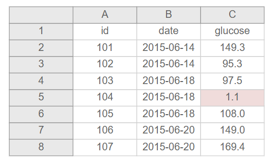

You can view slides from this talk: in progress
Data cleaning or data wrangling is the process of organizing and transforming raw data into a dataset that can be easily accessed and analyzed. A data cleaning plan is a written proposal outlining how you plan to transform your raw data into the clean, usable data. This is different than a code file or even a pseudocode file in that there is no code or syntax in a data cleaning plan. It is just a plain text explanation of the transformations and checks you intend to implement on a raw data file. It can be saved in any format that works for you (text, markdown, etc.). You can even write it in a code file (ex: .R) through comments if you wish, and I often do, as long as reading your comments is not code or technical skills dependent. Anyone from a project coordinator to a programmer should be able to read and understand this file and provide feedback if needed. This plan is started prior to data cleaning, however, similar to every other piece of documentation, this is also a living document that will be updated as you obtain more knowledge.
An example of a very simplified cleaning plan:
Data cleaning plan for project-a student survey
In order to start a data cleaning plan, you need to have the following:
Data cleaning requires a solid foundation around data literacy, the ability to create, interpret, and communicate data as information. Without data literacy it is difficult to visualize how to transform the raw data you have into the format that you need to answer your questions.
While we hope data literacy and good data management permeates every step of the data lifecycle, including data collection, neat data is rarely handed to you, and oftentimes you are taking a file that is mostly unusable and converting it to something useful.
Here are ways to build data literacy, adapted from Venngage:
üìë Additional resource on boosting data literacy
A lot of data literacy also relies on domain knowledge or ghost knowledge, information you only learn from being immersed in a field. Examples of domain knowledge I have acquired from being in the field of education research include:
If researchers tell me they are analyzing longitudinal data, I know I need to account for time in the data in some way (ex: add a time variable). If researchers are clustering data, I know I need to account for that cluster in the data in some way (ex: add a cohort variable). I know if we have multiple forms or forms across time, we have to link our data and I need to add a unique study id to link data.
There are school districts we work with that send us student level discipline data (ex: number of OSS or ISS referrals). They do not have codebooks or data dictionaries for these data. However, I know from working with these districts and having conversations with them, that if there are no referrals for a student, they leave a cell blank (rather than enter a zero). If I did not have this domain knowledge, I would assume the information is simply missing.
Similarly, I know from working with certain districts as well as state education agencies and having conversations with them, that how test scores are collected or scored have changed across years. Again, most of these agencies don’t usually have codebooks or data dictionaries but I have learned this through conversations and by noticing differences in score ranges over time.
Again, from working with districts and states, I know to prepare for inconsistencies in data. I’ve seen variable names change over time. I’ve also seen the variables collected change over time. And sometimes, across time, variables with the exact same name are no longer measuring the same thing (another reason why documentation is so important).
I know what you may be thinking here. Earlier I said that the interpretation of a data cleaning plan should not require any technical knowledge. This is still true. However, the person who writes the data cleaning plan still needs to have a basic understanding of the software that is used to collect the data and any software that will be used to clean or analyze the data. This knowledge will inform the steps you add to a data cleaning plan.
Become familiar with the following:
| Q1_1 | Q1_2 | Q1_3 | Q1_4 |
|---|---|---|---|
| NA | 1 | NA | NA |
| NA | 1 | 1 | 1 |
| NA | NA | NA | NA |
| 1 | 1 | 1 | NA |
While everything above is absolutely imperative to the data cleaning process, this may actual be the most important step in developing a data cleaning plan. If you don’t know a) how your data is collected, and b) how researchers plan to analyze the data, then you have no roadmap for data cleaning. This is where you learn things such as:
Source: Data accounting spreadsheet from Aleata Hubbard
This initial meeting with stakeholders, prior to data collection or even prior to building data collection tools, is a great time to start your documentation. This should not just be one initial meeting though. While the PIs may only need to be brought in at the beginning, a data manager should meet with the coordinators more frequently to monitor changes to the data collection instruments, any new measures added, changes in data collection protocol, or any unanticipated hiccups. Any updates should be documented in things such as protocols, codebooks, data dictionaries, or a data cleaning timeline. After data is cleaned, data teams should consider having data reviews with project coordinators to cover what data issues were encountered and what could the team have done better.
Before we can start writing our data cleaning plan, we need to understand what structure we need our data to be in for analysis.
In the world of quantitative education research, we are most likely trying to create rectangular datasets (rows and columns) that are machine readable, rather than having data in text files (ex:pdf), video recordings, xml, etc. Even in qualitative research, we are often wrangling data to be in a format that is analyzable and allows categorization.
The two ways data will need to be structured for the field of education are wide or long. The simplest way to think about wide is that all data collected on a unique participant will be in one row. The easiest scenario to see this is with repeated measure data. If we collect a survey on participants in wave 1 and 2, those waves of data will all be in the same row (merged/joined together on a unique ID) and each wave of data collection will be appended to a variable name to create unique variable names.
| stu_id | w1_stress1 | w1_stress2 | w2_stress1 | w2_stress2 |
|---|---|---|---|---|
| 56987 | 3 | 4 | 2 | 3 |
| 54882 | 1 | 1 | 1 | 2 |
| 55574 | 2 | 1 | 4 | 1 |
In long data, a participant can repeat in your dataset. Again, the most straight forward way to think about this is with repeated measure data, where each row will be a new time point for a participant. This is often called appending data. In this scenario, we no longer need to append the data collection wave to variable names. However, we would need to add a time period variable to denote the wave associated with each row of data.
| stu_id | wave | stress1 | stress2 |
|---|---|---|---|
| 56987 | 1 | 3 | 4 |
| 56987 | 2 | 2 | 3 |
| 54882 | 1 | 1 | 1 |
| 54882 | 2 | 1 | 2 |
| 55574 | 1 | 2 | 1 |
| 55574 | 2 | 4 | 1 |
There are different reasons for constructing your data one way or another. For example, repeated measure procedures typically require data to be in wide format, where the unit of analysis is the subject. While mixed model procedures typically required data to be in long format, where the unit of analysis is each measurement for the subject.
The thing is, it is very easy to restructure data from one way to another. So my opinion is, the easiest way to manage data is to:
Don’t merge data until you have to. It is much simpler, in terms of data management and syntax writing, to keep variable names consistent over time.
Don’t append any time periods to variable names or add a time variable to your data until you have to (this can all be added very easily in your syntax). You will know what time period is associated with the data file based on the file name and storage location.
Once someone requests data or you need it for your own purposes, then you can add a time variable or append time to variable names as needed, and merge or append data across time. Just make sure to ask the requester what format they want their data in.
üìë The Analysis Factor has a great blog post on things to consider when choosing between long and wide format.
Most of what I mentioned above refers to how to structure data over time. However, we also need to discuss how to merge disparate data sources within time. Most likely you will be collecting more than one piece of data from participants. You may have a survey and an assessment for instance. Within time, those forms will always be merged in wide format. You will link a participant’s survey data to their assessment data through the unique identifier you’ve give the participants and attached to each form.
I of course, cannot pass over the topic of tidy data here. The term is ubiquitous in the world of data and since I plan to use R for data wrangling in later modules, tidy data needs to be covered. Tidy data, defined by Hadley Wickham, meets very specific conditions which are:
Essentially, tidy data are long format data.
| Not tidy data | Tidy data |
|---|---|
I think in education research, tidy data definitely has a time and place (for example in creating visualizations/graphs, and some analyses). And as I mentioned earlier, this is the most clean way to store your data since variable names aren’t repeating and changing based on things like time periods. However, I think what is most important is organizing your data in the rectangular format (rows and columns) that is necessary for your analysis. I also think it is important to follow some of the other guidelines set forth by Hadley Wickham, and also by Karl Broman and Kara Woo in their paper Data Organization in Spreadsheets.
Important guidelines to follow:
| Two things one cell | Two things two cells |
|---|---|
| Not rectangle | Rectangle |
|---|---|
Just be prepared because while you may put in the planning to collect organized data, many of the secondary datasets you use may not be organized in a nice rectangle for you. But don’t worry! You can transform the dataset on the left into the one on the right with a little patience, planning, and code. You can find more examples of non-rectangular data from Karl Broman here.
| Highlight | No highlight |
|---|---|
|  |
| Empty | Not empty |
|---|---|
Resources:
üìë Karl Broman
üìë R for Data Science
üìë Tidy Data
In the end, what you will most likely want is one dataset per participant entity (school dataset, teacher dataset, student dataset). And if you plan to link these together, you will need to make sure you are able to do that through your ID schema.
Our role as data managers is not to think of every possible iteration of how an analyst/researcher may want their data or every variable they may need. However, it is our role to reduce the amount of work required to get that data into an analyzable format. Omar Elgarby wrote that “Quality data beats fancy algorithms”.
Clean data should be:
Below I lay out some of the go-to steps I like to add to a data cleaning plan and the reasoning behind why I think they are important.
First, some global rules:
First rule: Never make edits to the raw data. You never know when you will make an error and need to return to the the original, uncorrected data file.
Resources:
üìë Effective Data Management
üìë Psych Technical Specification
Second rule: Keep everything (except variables that are identifying and completely unnecessary for project). Keep both item level and aggregated variables, recoded and original variables. Again, you never know which variables someone may need for their analysis.
Third rule: Always de-identify the clean/analysis data. First, ensure your study ID is in the data and is accurate, then remove all PII (name, SSN, email, DOB, school name, parent name, IP address, etc.).
Source: J-PAL
While this is not a comprehensive list of every possible data cleaning step you will need for your unique dataset and the questions your stakeholders need to answer, these are common steps that typically apply to all data in some way. You may need more or less steps depending on your data. Also, while these steps are presented in a logical order, they do not all need to happen in this order.
Quick thought: Anonymous data
If you are collecting anonymous data, some of the steps above will not apply to you:
1. You will not merge in a participant study ID except maybe at the highest level of data collection (ex: your cluster level, such as school or district ID).
2. You will not be able to drop duplicate cases (you won’t know if you have duplicates in your data because you will have no row level identifying information).
You will still however, need to de-identify data if you collected anything identifying such as school name or IP address.
You will also be limited in your data transformations:
1. You will not be able to merge disaggregated data in wide format across time or forms because you will have no linking participant ID. You can only append data in long form because in long data, rows are stacked on top of each other and aligned based on variable names (no unique participant ID is needed).
2. You can merge data across time or forms in wide format if you aggregate and join your data to a level that you collected such as school or district.
Resources:
üìë Aleata Hubbard has a blog post on six data cleaning checks
üìë Jeff Leek also has a great blog post on creating research quality datasets.
üìë An Introduction to data cleaning with R
üìë The Basics of Data Management
Over the years I have seen researchers manually clean data in programs like Excel and in every scenario I can think of, it’s a bad idea because a) it is not reproducible, b) it leads to errors, and c) it is time consuming. My recommendation is to clean your data, no matter how small the task, with syntax (machine readable programming instructions written in a text editor that are processed by your computer). Even if you use a graphical user interface (GUI) program like SPSS (point and click), you need to log every move you make in that program and paste the code into a syntax file. Syntax files allow you to have a record of every transformation you make from the raw data to your clean data. While writing syntax may seem time consuming up front, it helps you to be more thoughtful in your data cleaning process and it can save you an enormous amount of time in the future if you plan to clean data with the same features multiple times (in say a longitudinal study).
You can use whatever program you want to write syntax (OpenRefine, R, Stata, SPSS, SAS, SQL, etc.). If you review the trainings available through Data Carpentry you’ll see that most of their data management workshops use SQL, OpenRefine, R, or Python (all open source).
If I haven’t sold you on using syntax yet, here are a few horror stories of manually cleaning data (based off of real life events):
1. A collaborator is in charge of cleaning a portion of your project data, while you clean the other portion. At the end of a data collection wave, the collaborator sends you clean data. Yet when reviewing it you find three small errors in the data they send you.
These all seemed like quick changes you could make very easily in a point and click interface, so you did. Then you saved that dataset as the final clean dataset. However, a month later, your collaboator found an error in the data they sent you, and they send you a revised clean dataset.
This is the process you go through:
You did not document the changes you made to the prior dataset (either via syntax or even in a README_versioning file). Therefore, you had to do your best to remember what changes you had made to see if you needed to make them again, potentially leaving errors in the data if you forgot a step.
After checking the data and discovering that the changes you had previously made to the data had still not been corrected in this new file, you had to make all the changes to the new data again. This time, you write all the updates in syntax! This allows you to document your changes, as well as saves you from having to re-do all of your point and click work again in the future if you ever received another updated file. You can just run your syntax in a matter of seconds.
2. You download two Excel files that need to be appended (they have the same variables). In an attempt to move quickly, you decide to append the files by cutting all the rows from one file and pasting them below the rows of the other file. You then save this data as your complete dataset. At a later point when you are running some descriptive summaries on the data, you notice ranges for some of your variables are incorrect. You go back to your two original files (luckily you saved both original files as “raw” data). You do some detective work and discover that the order of the columns in each file are not identical so when you pasted data from one file to the other, the values did not correctly align. To correct this, you write syntax where you bind the two raw data files using a function that matches files based on column names.
3. A school district sends you a data file that you have requested. You know you only need this data for a one time report so you decide to start doing your manipulations in the raw data, by hand. You save this data, use it for your report, and then plan to never see it again. A year later, your coworker actually needs that data for another report. When that coworker starts digging around in the data, they find errors (values out of range and so forth). However, with no documentation of your changes, no syntax, and no raw data, there is no way to know how to fix the data. The data is rendered useless.
Resource: